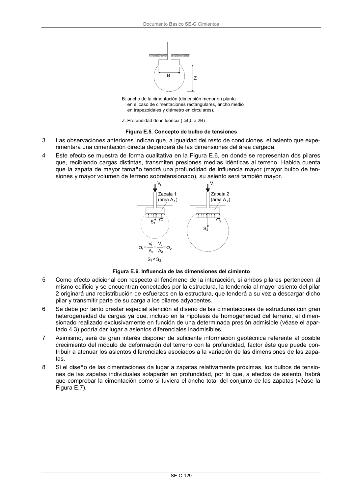
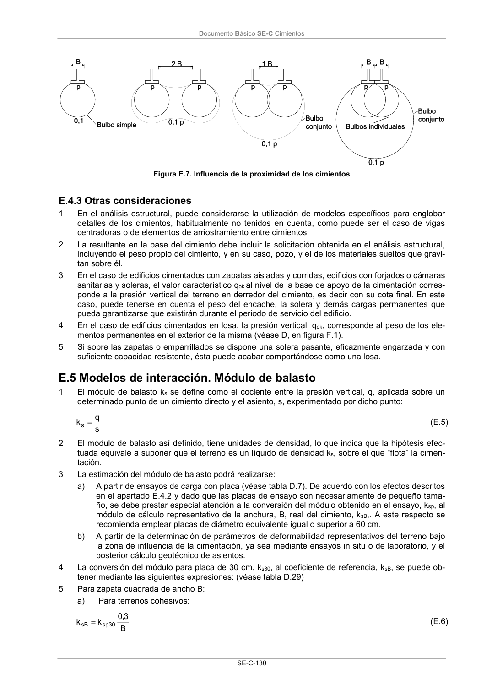

DB-SE-C Cimientos · edición 2019-12-20 · capa oficial
Documento DB-SE-C-oficial · SHA-256 del PDF a71133f4b0dca253e45ea3071c70f2a512354bcc5cd841bf89b1a502f567ac5e
Copia fiel del PDF fuente · Fuente oficial
Ficha de la disposición en la fuente oficial
Formatos: JSON del segmento · Markdown
E.4.2 Influencia del tamaño de la cimentación 1 El incremento de presión transmitido al terreno por una cimentación directa disminuye progresiva- mente en profundidad con la distancia a ésta. A efectos de cálculo y salvo en el caso de suelos blandos, se podrá suponer que el límite de interés se circunscribe a puntos del terreno en los que el incremento de la presión vertical resulte mayor o igual al 10% de la presión media de contacto bajo la cimentación. 2 El lugar geométrico del espacio de suelo definido en el apartado anterior se denomina habitual- mente “bulbo de tensiones”, cuya forma cualitativa se muestra en la Figura E.5. El incremento de presión recibido por el suelo más allá de este bulbo será, en la mayoría de los casos, lo suficiente- mente pequeño como para que sus efectos sean comparativamente despreciables, aunque en ge- neral debe comprobarse. Documento Básico SE-C Cimientos SE-C-129 Figura E.5. Concepto de bulbo de tensiones 3 Las observaciones anteriores indican que, a igualdad del resto de condiciones, el asiento que expe- rimentará una cimentación directa dependerá de las dimensiones del área cargada. 4 Este efecto se muestra de forma cualitativa en la Figura E.6, en donde se representan dos pilares que, recibiendo cargas distintas, transmiten presiones medias idénticas al terreno. Habida cuenta que la zapata de mayor tamaño tendrá una profundidad de influencia mayor (mayor bulbo de ten- siones y mayor volumen de terreno sobretensionado), su asiento será también mayor. Figura E.6. Influencia de las dimensiones del cimiento 5 Como efecto adicional con respecto al fenómeno de la interacción, si ambos pilares pertenecen al mismo edificio y se encuentran conectados por la estructura, la tendencia al mayor asiento del pilar 2 originará una redistribución de esfuerzos en la estructura, que tenderá a su vez a descargar dicho pilar y transmitir parte de su carga a los pilares adyacentes. 6 Se debe por tanto prestar especial atención al diseño de las cimentaciones de estructuras con gran heterogeneidad de cargas ya que, incluso en la hipótesis de homogeneidad del terreno, el dimen- sionado realizado exclusivamente en función de una determinada presión admisible (véase el apar- tado 4.3) podría dar lugar a asientos diferenciales inadmisibles. 7 Asimismo, será de gran interés disponer de suficiente información geotécnica referente al posible crecimiento del módulo de deformación del terreno con la profundidad, factor éste que puede con- tribuir a atenuar los asientos diferenciales asociados a la variación de las dimensiones de las zapa- tas. 8 Si el diseño de las cimentaciones da lugar a zapatas relativamente próximas, los bulbos de tensio- nes de las zapatas individuales solaparán en profundidad, por lo que, a efectos de asiento, habrá que comprobar la cimentación como si tuviera el ancho total del conjunto de las zapatas (véase la Figura E.7). Documento Básico SE-C Cimientos SE-C-130 Figura E.7. Influencia de la proximidad de los cimientos

